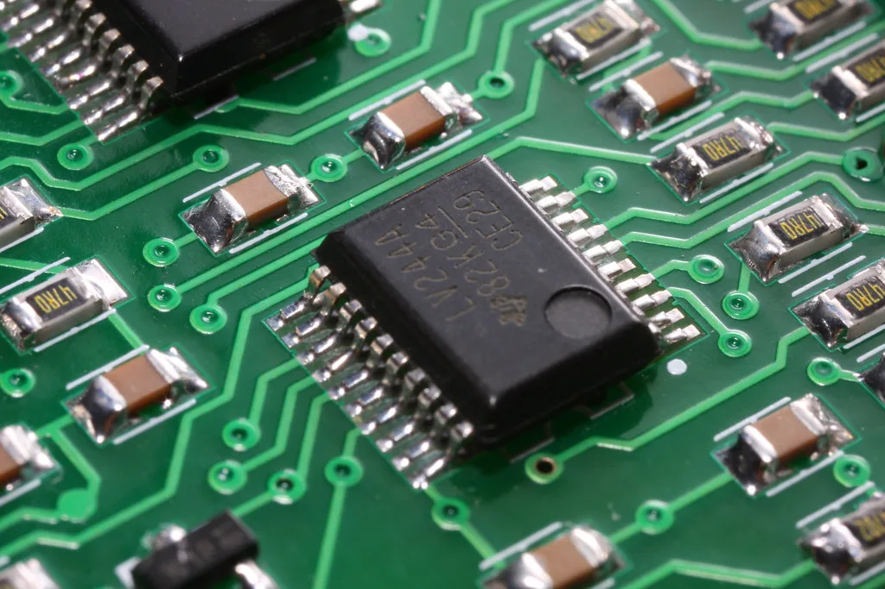

SK하이닉스, 나스닥 ADR 상장…역대 최대 40조원 조달
SK하이닉스가 미국 나스닥 시장에 주식예탁증서(ADR) 형태로 상장하며 역대 최대 규모의 해외 자금을 조달했다. 이번 ADR 공모를 통해 확보한 자금은 국내 반도체 생산 설비 확충에 집중적으로 투입될 예정이어서, 인공지능(AI) 메모리 반도체를 둘러싼 글로벌 경쟁에서 투자 속도를 끌어올릴 수 있을지 주목된다. 국내 대기업이 대규모 ADR 공모로 해외 자본시장에서 직접 대규모 자금을 조달한 사례로는 이례적인 규모여서, 국내외 증권가에서도 이번 상장 결과를 예의주시해 왔다.
SK하이닉스는 이달 10일(현지시간) 미국 시장에서 ADR 공모가를 1주당 149달러로 확정하고, 이를 통해 약 265억달러, 우리 돈으로 약 40조원 규모의 자금을 조달했다. 이는 2014년 알리바바가 미국 증시에서 조달한 250억달러 규모를 넘어서는 것으로, 외국 기업이 미국 시장에서 진행한 주식 공모 가운데 역대 최대 기록으로 평가된다. 전 세계 공모 시장을 통틀어도 우주기업 스페이스X와 사우디아라비아 국영 석유회사 아람코의 뒤를 잇는 역대 세 번째 규모다.

이번 공모에는 발행 물량의 7배가 넘는 약 2000억달러 규모의 청약이 몰린 것으로 전해졌다. 미국의 장기 투자 펀드와 정보기술(IT) 전문 펀드, 국부펀드, 아시아 지역 투자자 등 다양한 글로벌 자금이 청약에 참여하면서 흥행에 성공했다는 평가가 나온다. 이는 고대역폭메모리(HBM) 등 인공지능 메모리 시장에서 SK하이닉스가 차지하고 있는 위상에 대한 해외 투자자들의 기대감을 보여준다는 해석이다.
SK하이닉스는 이번에 조달한 자금을 국내 설비 투자에 집중 투입할 계획이다. 구체적으로는 경기 용인 반도체 클러스터 내 신규 팹 건설, 충북 청주의 첨단 패키징 공장 구축, 극자외선(EUV) 노광 장비 도입 등에 자금을 사용할 방침이다. 이는 메모리 반도체 수요가 AI 서버와 데이터센터를 중심으로 빠르게 늘어나는 상황에서 생산 능력을 선제적으로 확충하려는 포석으로 풀이된다. 특히 용인 클러스터는 완공까지 수년에 걸친 대규모 투자가 필요한 사업인 만큼, 이번에 확보한 자금이 안정적인 재원으로 뒷받침될 수 있다는 점에서 의미가 크다는 평가다.

이번 ADR 상장 이후에도 국내 증시에서 거래되는 SK하이닉스 보통주 체계에는 변화가 없다. 기존 보통주는 그대로 유가증권시장에서 거래되며, 미국 투자자들은 별도로 발행된 ADR을 통해 SK하이닉스 지분에 투자할 수 있게 됐다. 상장 초기 미국 시장에서 주가가 공모가를 웃도는 흐름을 보이면서 국내 증시에서도 SK하이닉스에 대한 관심이 함께 높아지는 분위기다.
업계에서는 이번 대규모 자금 조달이 반도체 업황의 변동성이 커진 시점에 이뤄졌다는 점에도 주목한다. 최근 글로벌 반도체 업종이 단기 조정을 겪는 가운데서도 SK하이닉스가 대규모 해외 자금을 성공적으로 확보하면서, 향후 설비 투자 계획을 흔들림 없이 이어갈 수 있는 재무적 여력을 갖췄다는 평가가 나온다. 확보한 자금이 실제 설비 투자와 생산능력 확대로 이어져 AI 메모리 시장에서의 경쟁력 강화로 연결될 수 있을지, 앞으로의 집행 과정에 관심이 집중되고 있다.
경쟁사인 삼성전자를 비롯한 국내외 메모리 반도체 업체들도 AI발 수요 확대에 대응해 설비 투자를 늘리고 있는 상황에서, SK하이닉스의 이번 대규모 자금 확보가 향후 HBM 등 첨단 메모리 시장의 경쟁 구도에 어떤 영향을 미칠지에도 관심이 모인다. 시장에서는 SK하이닉스가 조달한 자금을 실제 설비로 얼마나 빠르게 전환하는지가 다음 국면의 경쟁력을 가늠할 잣대가 될 것으로 보고 있다.